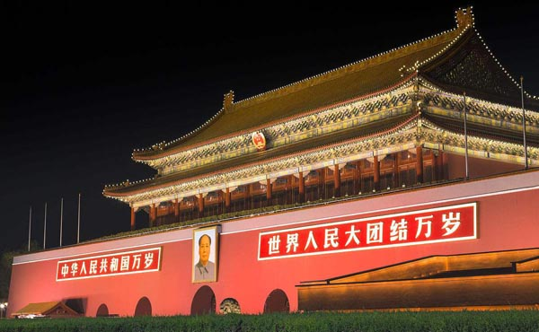
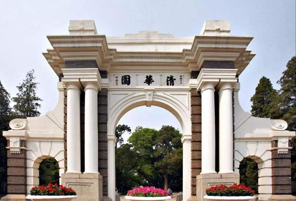

- Financial
- Agriculture
- Public Security
- Civil Aviation
- Environmental Protection
- Industry
- Government
- School
-
Finance
--What is being changed by Financial Big data Analysis is not only technology but an era.
Most banks, financial services and insurance organizations (BFSI) are now undergoing a transformation to develop their businesses and improve the quality of customer service through a data-driven approach. Due to the large number of served customers, the financial industry has complex business types and high degree of informationization, and naturally has the characteristics of “massive users and big data”. such as:
In terms of scale, financial institutions now implement computer processing for all core business systems, and store and process large amounts of data all the time. The financial industry has a lot of customer information, savings information, product profiles, quotation data, market data and trading transaction data, etc.The New York Stock Exchange alone writes more than 1 tb of data a day;
In terms of speed, concurrent massive user access and transaction requests mean that higher service processing speed is required. For example, at the peak of payment, the peak value of network payment can reach 256000 per second, and the peak value of database processing can reach 42 million times per second. It is clear that this is far beyond the processing capacity of traditional databases;
There is, of course, the diversity of data. Among the data generated by financial institutions themselves, there are some structured data, such as the amount of deposits of customers, the amount of loans, the number of purchases of financial products, and so on. The storage of this part of data is relatively small, and the amount of data is more. The mining value is more than those of semi-structured or unstructured data, such as copies of user identification and asset proof, behavior data, social network data and so on.
Of course, the requirements of banking regulators for data management and monitoring are also constantly rising. In the 13th Five-Year Plan for the Information Construction of China's Financial Industry, The "13th Five-Year Plan" Supervision guidance for Information Technology in China's Banking Industry both mentioned the need to strengthen data management, control and control, improve the quality of data information, and adopt data mining and big data technology to make deep use of them. Extract data to improve management and control effectiveness.
Clearly, big data is no longer just a term, banks and other financial institutions have become an inevitable trend in the choice of big data technology.Financial big data's core technology can not do without dealing with the following things: obtaining data, storing data, analyzing data and application data.
Simply put, corresponding to a big data analysis platform, there may be a data generation layer, a data exchange layer, a data storage and computing layer, a data application layer and a user access layer.
In the data generation layer, it is the structured, semi-structured and unstructured data generated from inside and outside the enterprise, and then through the data exchange layer, the data is extracted from the source, cleaned and exchanged between the components of big data platform. In the data storage and computing layer, the data can be sorted and stored after cleaning by hdfs, S2, hbase, cassandra and other software, and the data processing and access requirements of the upper layer will be responded to by mapreduce,spark,storm and other frameworks and algorithms. Of course, these requirements correspond to various interface requests and user operations in the data application layer and the user access layer, such as dashboards, reports, real-time queries, multidimensional analysis, mining predictions, and so on.
To put it simply, the huge data content of the banking industry needs to go through many cycles from "data acquisition, clean-up / integration, data warehouse, process scheduling, data mining to knowledge application", which will reflect the great application value. And how to "open" the multi-source heterogeneous data, data integration and modeling analysis, is one of the biggest problems that organizations are facing at present.
The financial industry's choice of big data, in addition to the government's push, of course, from the most practical business driven.
According to McKinsey, using data to make better marketing decisions could boost marketing productivity by 15-20 percent-a figure that could be as high as $200 billion, taking into account an average of $1 trillion a year in global marketing spending. For bfsi, the main business drivers are precision marketing, risk control, business optimization and business innovation.
Precision marketing: under the impact of Internet finance, bfsi organizations urgently need to master more user information, including basic personal data, transaction history, browsing history, services and so on; The data-based analysis can help them to construct accurate user portrait, understand the customer and carry on the customer segmentation, thus carry on the individualized and intelligent marketing such as precision marketing, real-time marketing and so on.
Risk control: with big data technology, institutions can uniformly manage internal and external heterogeneous data, external credit information and user social network data, by providing more automated processes. More accurate forecasting system and less risk of failure improve the forecasting ability of risk model and save cost significantly. Big data has many areas of application and value in risk management, including fraud management, credit management, market and commercial lending, operational risk and integrated risk management.
Management optimization: with the help of big data decision analysis, we can understand business data more accurately, improve management decision, provide reliable data support for management, and make business decision more efficient and agile. Of course, big data can also make the management know the actual working efficiency of employees in real time from the business performance, so as to formulate relevant management measures and realize organizational incentives.
Business innovation: business data sharing and data mining based on big data platform can better understand user needs, carry out business innovation, improve interaction with customers and increase user stickiness. Continue to enhance the core competitiveness of banking business.
As a cloud service to better understand the financial business, the financial industry cloud solutions are already providing a secure and reliable it infrastructure for a number of banks, securities, insurance and Internet financial institutions, big data said. Artificial intelligence and Baidu ecological support and other services, and through artificial intelligence, security protection, intelligent acquisition, big data risk control, it system, payment and other six technical capabilities to enable partners.
-
Agriculture
--Make full use of big data technology to build new types of agriculture, increase agriculture production capacity and optimize resources reallocation
Set up agricultural big data platform, collect and store a large number of historical data, external data, the ultimate goal is to make agricultural production more intelligent, more efficient. Therefore, it is necessary to use advanced data mining technology and artificial intelligence technology to realize agricultural intelligence. For example, analysis of guidance best practices based on historical weather conditions and crop growth, warning of potential pests and risks of meteorological diseases, etc. The realization of these intelligent applications mainly needs to use data mining and artificial intelligence technology. Big data platform provides the algorithm library of data mining and artificial intelligence, and also provides the data modeling tool to facilitate the user to carry on the data cleaning, the data modeling and the data model test.
Big data platform data mining engine realizes machine learning algorithm library and statistical algorithm library, supports parallelization of commonly used machine learning algorithm and statistical algorithm, and makes use of the advantage of spark in iterative computing and memory computing. Parallel machine learning algorithm and statistical algorithm are run on spark. The supported machine learning algorithms include logical regression, naive Bayes, support vector machine, clustering, linear regression, recommended algorithm, etc. The statistical algorithm base includes mean, variance, median, histogram, box diagram and so on. It can support a variety of analytical applications on the platform, such as user behavior analysis, accurate marketing, labeling and classification of users, such applications will use the platform's data mining function.
Agricultural big data is a kind of data set which has the characteristics of region, seasonality, diversity, periodicity and so on. It has a wide range of sources, diverse types, complex structure, potential value, and difficult to use common methods to process and analyze the data.
Agriculture big data retains the basic characteristics of big data itself, such as huge (volume), type, diverse (variety), value density, low (value), processing speed, fast (velocity), processing speed, high (velocity), accuracy, high (veracity) and high complexity (complexity), etc. And the information flow inside agriculture has been extended and deepened.According to the division of agricultural industrial chain, agricultural big data mainly focuses on agricultural environment and resources, agricultural production, agricultural market and agricultural management.
(I) Agricultural natural resources and environmental data. It mainly includes land resources data, water resources data, meteorological resources data, biological resources data and disaster data.
(2) data of agricultural production include production data of planting and aquaculture. Among them, the production data of planting industry include the information of improved variety, the historical information of plot farming, the information of seedling raising, the information of sowing, the information of pesticide, the information of chemical fertilizer, the information of agricultural film, the information of irrigation, the information of agricultural machinery and the information of agricultural situation. The production data mainly include individual pedigree information, individual characteristic information, feed structure information, environmental information, epidemic situation and so on.
(3) the agricultural market data include the market supply and demand information, the price quotation, the production material market information, the price and the profit, the circulation market and the international market information and so on.
(4) Agricultural management data mainly include basic information of national economy, domestic production information, trade information, international agricultural products dynamic information and emergency information.
Build platform editing
In order to continuously promote the optimization of agricultural economy, realize the sustainable industrial development and the optimization of regional industrial structure, and further promote the construction process of intelligent agriculture, it is necessary to grasp the development trends of agriculture in a comprehensive and timely manner. This needs to rely on agricultural big data and related analysis and processing techniques, and build an analysis and application platform for agricultural big data to support the platform.
Technically, the platform should make full use of advanced data management technology and data warehouse technology, and build a business intelligence project with high efficiency, advanced nature and openness. Structurally, the platform should be configurable to meet resource and business process changes. At the same time, with the development of business and the increase of traffic, the system should also have good application and performance expansion.Platform functionality
（1）the interactive between differnet database
（2）According to the individualized demand of agricultural big data, a series of data collection mechanisms are formed, and the relevant programs of data collection are designed and perfected, and the mechanism is arranged to run periodically on the platform.
（3）Data browsing, data query, presentation and basic statistical analysis and other preliminary applications;
（4）Realizing the communication platform of agricultural big data analystsThe targe platform will achieve
（1）Through the construction of platform, gather all kinds of resources, construct big data Research Center with characteristics in the field of agriculture.；
（2）Construction of China's first specialized Agricultural data Resource Center through data Integration, Collection and processing；
（3）Based on agricultural big data related technologies, including data acquisition technology, storage technology, processing technology, analysis and mining technology, display technology and so on to build agricultural big data application platform;
（4）Through analyzing the application platform and publishing the results, the authoritative platform of agricultural professional research is formed, which serves the universities and the government, the agribusiness, the public and so on.
-
Public Security
--Wisdom public security is an important part of a Wisdom city, effectively protecting the long-term stability of the society and the stability of the business environment.

The smart public security solution is based on the development strategy of strong police in science and technology, using high-tech technologies such as cloud computing, Internet of things, big data, video intelligent analysis, gis,gps, digital trunking, etc., through the top-level design for actual combat and serving the public. As well as the construction of the police information sharing mechanism, the system intensity integration mechanism, the application depth analysis mechanism and so on. The concept of "online cloud service" is introduced, and according to the "cloud end" model, Build a unified police geographic information cloud service system, through data bus (esb), data cleaning (etl), network "spider", big data mining and other intelligent technologies to assist the leadership and decision-making with high automation. To provide accurate, professional and real-time geographic information service for local public security departments, and to realize intelligent public security
Big data platform which provides efficient data gathering, query, analysis, mining, display, management and security in public security business application. The platform makes full use of cloud computing, big data and other advanced technologies to build a top-level information framework for the actual combat of public security, so as to achieve efficient and standardized public security work, organic cooperation of business, dynamic and fresh data, and highly information sharing. Close to the actual combat application of policing work model.Big data search system:
Police big data's search engine can achieve trillion-level cross-departmental cross-regional massive police data horizontal correlation, millisecond inquiry, batch comparison. In addition to supporting keyword / full-text retrieval, data collision, multi-dimensional customized retrieval, we can also combine the image retrieval based on in-depth learning to realize seamless association display of people, cars, objects and case information.Visulization Analysis system:
The platform uses the visual features such as relational analysis and bi analysis for reference and combines with the requirements of public security business application. From the perspective of time, space and relationship, the author helps the public security users to sort out and mine the data value.Relationship maps:
To realize the relationship description of people and people, people and cases, people and things, and to develop the relationship map of personnel and realize the analysis of relationship circle around someone constantly discovering the related persons or related objects.Relationship discovery:
Through the relationship modeling based on big data, association mining all kinds of relational data related to personnel, label the target object with relationship, and visualize the relationship between personnel.Space of six degrees:
Based on the six-degree space theory and the known relational network, the relationship mining between two specific target personnel is presented, and the relationship link or critical path of the two target persons is found out.Map of Wisdom:
Resource display, locus characterization, space-time analysis, compatible with pgis, arcgis, 100 degrees, Tencent, Sogou, Gao de, Tian map and other data access based on gis map, and support online, offline mode, vector, etc. Images and three-dimensional data presentation.Wisdom study system:
To provide a variety of information research ideas and research methods, such as technical warfare model. It also includes research applications for specific business topics, such as stability, terrorism, and so on. Collecting these ideas and methods and sharing them with others will greatly improve the efficiency of case detection and information research.Data acquisition system:
It provides distributed data acquisition, multi-source data support, visual data template, load balancing, breakpoint continuous transmission, real-time monitoring of the state of data collection, and finally the realization of safe and efficient data collection.Data management system:
Smart data warehouse: standardized and efficient data management, better reflects the importance of current data as a valuable asset. The intelligent data warehouse manages the data effectively from all aspects of data source, data status, data quality, data standards and specifications.System monitoring:
Real-time monitor and alarm for computing resources, storage resources and network resources of the system.Security audit system:
Mainly rely on the existing public security system, from the application audit and data audit to provide big data platform security audit. The application safety design is mainly to ensure the security of the public security big data platform itself.Applied audit:
Authentication, access control, security audit, residual information protection, application communication security, software fault tolerance and resource control.Data audit:
The core of data security design is to protect the security of key data such as management data, authentication information, important business data and so on. It mainly includes data encryption, backup and recovery.Platform features
Integration of big data Framework
Efficient Computational Analysis
Intuitive Interactive experience
Flexible Research and Analysis of
Professional Technical support
-
Civil Aviation
--Stride towards a big intelligent era of civil aviation
Big data platform acquires data from the external data acquisition platform, after data cleaning, data governance is stored on the platform's internal data storage components, and provides mass data processing capability for the upper application system, such as batch processing, real-time processing and so on. It also provides data mining and data analysis components such as mpp, machine learning, graph library, knowledge map for the upper application system, and provides access ability for the upper layer through unified query interface. < br/ > system main data collection and integration, data cleaning, Data storage, data analysis and mining, data query, platform management, data management, etc. Big data platform architecture design idea is to take data storage as the core, data processing as the main line, and management as the main means. Around the data storage, the data processing flow is divided into data collection integration, data cleaning, data analysis and mining, data query and other main modules. It is warm, hot big data exists in extremely melt integration platform, cold data is in vsan. The data source of the < br/ > big data platform can be divided into two categories. The data outside the public security network includes 21 application system data and vpdn data. Operation control network, CAAC network data, civil aviation communication network data and Internet data are collected through the external data acquisition and processing platform, which are stored in the original material library inside the public security network. Then the data which can be managed by big data system is transformed into a data storage platform by etl data acquisition and integration tools. The data in the public security network include basic business platform, intelligence and inquiry platform, The comprehensive information sharing service and the data compiled in the data exchange center are converted directly through the etl data acquisition and integration tool of big data platform into the data that the big data system can manage. < br/ > in addition, The big data Center will also use the data Exchange Center to obtain the relevant data of the seven categories of people and the eight major information databases of the Ministry of Public Security, as well as the identification data of the information resources service platforms of the public security offices of various provinces after querying and comparing.
The following respectively introduces the relationship between these system platforms and big data's platform.
1) the external data acquisition and processing platform
external data acquisition and processing platform is responsible for collecting data outside the security boundary. Including Internet public opinion data, data of 21 Internet application systems related to civil aviation security, data of civil aviation communication network, etc., and stored in the original material bank inside the public security network without modifying the original data. The formation of big data platform can collect, clean, and manage the original data version.
2) raw material library
raw material database data to ensure the primitive nature of the data, The storage method should be consistent with the collection source data storage method. Structured data is stored in relational and non-relational databases, video, pictures, and files are stored in distributed file systems and object storage. The semi-structured data can be stored by the combination of database and distributed file system according to the actual situation.
3) data exchange center
data exchange center is built on the top of big data platform. As an important basic platform for the civil aviation security system, it will provide external related structures and units for the compilation of data catalogs for big data's data, and will also capture data from external related structures and units according to the needs of the big data platform.
4) The Information and query platform
Information and query platform is based on all kinds of data, including the element library, provided by big data platform. Subject database, intelligence analysis and judgment, and write the conclusion back to big data platform.
Information and query platform makes full use of the parallel computing, natural language processing, in-depth learning and knowledge atlas provided by the big data platform. To collect and analyze information
5) the application system of the basic business platform
basic business platform is the data of big data platformBig data platform needs to provide high data search, collision, extraction efficiency, In order to support the rapid location of the data needed by the integrated information sharing service platform in massive data,
the big data platform is a unified and integrated big data platform born for artificial intelligence and big data analysis, which can easily run locally. The cloud or the edge of the business machine platform; Full use of storage, management, process to analyze all kinds of real-time, critical, reliable data, unique design meets the requirements of industrial production, its capacity can reach eb scale; And in data protection, encryption, disaster recovery, security to achieve a very good level; the system can handle different object, graphics, size files, tables, events, storage blocks of huge amounts of information. We will also open source containerized management interfaces to ensure seamless access to distributed applications and portability in distributed environments.
The platform includes a variety of forward development analytics tools, as well as open source tools such as: apache hadoop, Apache spark, apache drill, apache hive,pentaho,madlib et al. In addition, the leading ai and ml libraries are integrated on the same platform, customizing one-stop storage, computing, cloud services, and artificial intelligence services for customers.
-
Environmental Protection
--Wisdom and environmental protection is an extension of digital environmental protection. Guarantee of resource conservation, environmentally friendly and harmonious society
Environmental monitoring is the "sentry", "ear and eye" and "ruler" in environmental protection work. It is an important part of environmental management and the most important basic and forward work of environmental protection work. With the development of economy and society, the environmental monitoring project is expanding, the monitoring field is expanding, the technical requirements are increasing, and the environmental monitoring is faced with more heavy tasks. As the basis of environmental protection, environmental monitoring has been integrated from the traditional technical level to the whole environmental protection work, and has become one of the important breakthrough points to promote the historic change of environmental protection. Environmental monitoring is required to achieve a comprehensive and profound historical transition from traditional to modern, from extensive to accurate, from decentralized and closed to integrated linkage, from current situation monitoring to forecasting and early warning, which provides strong technical support for environmental management. The informationization of environmental monitoring is one of the important means to guarantee the improvement of the ability of environmental monitoring. Under the new situation, it is necessary to use Tianjin Environmental Monitoring Center as the leading means to carry out the informatization construction of the whole city's environmental monitoring system. The application of high-tech means to the effective management of environmental monitoring data, monitoring data mining and analysis, and then better for the environmental management departments to provide data support services.
Intelligent environmental protection is the use of Internet of things technology, cloud computing technology, 3G technology and business model technology, data as the core, data acquisition, transmission, processing, analysis, decision-making services, to form an integrated innovation, intelligent model, Let environmental management, environmental monitoring, environmental emergency, environmental law enforcement and scientific decision-making more effective and accurate, through "smart in the management, wisdom in the application" for environmental management and environmental protection to provide comprehensive intelligent management and service support.
Business Synergy
will examine and approve administrative license, build project management, environmental supervision and management, environmental law enforcement, administrative punishment, environmental petition, environmental monitoring, solid waste management, nuclear and radiation management, total management, Ecological management, air quality prediction, environmental emergency, environmental decision-making and other business cooperation, to open the business relationship between the formation of collaborative management mechanism. At the same time, the business work of the government and the management of the enterprise itself and the environmental protection needs of the public are unified and coordinated to provide better service for the enterprise and the public.Integrated monitoring and control
establish a comprehensive three-dimensional monitoring network to monitor water pollution sources, air pollution sources, radioactive sources, motor vehicles, water environment, atmospheric environment, noise, intelligent environmental protection, etc. To realize the integrated intelligent monitoring and management platform of sky and earth monitoring.Resource sharing
can realize sharing and scientific evaluation of environmental quality, environmental safety and environmental risk information resources across regions, industries and platforms, and can solve key cities through models and evaluation systems. Major regional and watershed environmental management issues.The decision intelligence
always knows the real time environment quality condition, carries on the forecast to the environment quality of a certain area, at the same time implements the environmental economic means such as limiting approval, stopping production, shutting down and so on, aiming at the area with poor environmental quality. Accurately calculate the capacity of regional environmental resources and provide scientific basis for the adjustment of industrial structure.The information transparency
constructs the bridge of communication among government, enterprise and citizen through technology means such as government affairs net website, enterprise online work hall and environmental protection app software. To provide environmental information services for sewage enterprises, social associations and the common people, from the original single information release window and administrative examination and approval window to the provision of data services, and to accept supervision, Reflects the interactive exchange of public service flat platform changes.Intelligent and environmentally friendly big data integrated management platform
deeply intelligent and comprehensive interconnection using a variety of advanced sensing equipment comprehensive perception of the environment, including a variety of physical and chemical indicators and characteristics of water sensors and measuring instruments, Aiming at sensors and measuring instruments of various harmful gases in gas body, as well as more mature video surveillance equipment and video intelligent analysis technology, radio frequency identification (rfid) technology and so on, all kinds of equipment and technology are used synthetically. To gain unprecedented intelligence perception. Through a variety of network devices, the network is connected with advanced sensing devices, and the information obtained by the sensing devices is transmitted to the business platform in real time, and forwarded to handheld devices, computers and intelligent terminals.The data obtained from the perception layer can be used in the corresponding business system, even as the basic data for modeling. The data management platform can collect and analyze the data in real time. When the data exceed the limit, the data can be automatically alerted. Prompt environmental management department or pollution source enterprise to deal with it in time. Integrate the successful cases of environmental protection business over the years, build on seven major platforms: environmental administration management, environmental monitoring management, environmental risk prevention and control, supporting decision-making support, environmental supervision and public service. With cloud computing center and data resource center as the core, standards and norms system, security and operation system, organization and management system as the guarantee, geographic information platform as the basis of intelligent environmental protection platform, To achieve targeted intelligent management and service support for different levels of users.
To fully implement the concept of scientific development, and in accordance with the 12th Five-Year Plan of National Environmental Protection, to "deepen the total emission reduction of major pollutants, strive to improve the quality of the environment and guard against environmental risks," To comprehensively promote the historic transformation of environmental protection, to establish comprehensive perception, extensive interconnection, deep integration, centralized management, and intelligent application, The National Environmental Protection Internet of things system, which is safe and reliable and has perfect mechanism, has initially realized the effective supervision of the total quantity control index, the supervision of the whole life cycle process of hazardous wastes, environmental risk sources, and radioactive sources. Improve the level of environmental early warning and improve the level of dealing with unexpected environmental accidents, and provide an intelligent platform support for the overall improvement of environmental management energy efficiency.
-
Industry
--The application of industrial big data is always at the summit of technological innovation and revolution

Big data refers to the typical intelligent manufacturing model in the industrial field, from customer demand to sales, order, planning, R & D, design, process, manufacturing, purchasing, supply, inventory, delivery and delivery, after-sales service, operation and maintenance. All kinds of data and related technologies and applications produced by the whole life cycle of the whole product such as scrap or remanufacturing. With product data as its core, it greatly extends the range of traditional industrial data, and also includes relevant technologies and applications of industrial big data.
There are three main sources of industrial big data:
the first category of is related to production and business data. Mainly from the traditional enterprise information scope, is collected and stored in the enterprise information system, including traditional industrial design and manufacturing software, enterprise resource planning (erp), product lifecycle management (plm), supply chain management (scm), Customer relationship Management (crm) and Environmental Management system (ems). Through some enterprise information system has accumulated a large amount of product research and development data, production data, operating data, customer information data, logistics supply data and environmental data. This kind of data is the traditional data asset in the industrial field, and is gradually expanding in the environment of new technology application such as mobile Internet.
the second category is the equipment and material connection data. Mainly refers to the industrial production equipment and the target product under the Internet of things operation mode, the real-time production covers the operation and the operation situation, the operating condition, the environment parameter and so on manifests the equipment and the product operation state data. This kind of data is the industry big data's new, the fastest-growing source. In a narrow sense, industrial big data refers to this kind of data, that is, a large number of data produced rapidly by industrial equipment and products and with time series differences.
the third category is external data. Refers to the industrial enterprise production activities and products related to the enterprise external Internet source data, for example, to evaluate the environmental performance of the enterprise environmental laws and regulations, to predict the product market macroeconomic data, and so on.The application of
in intelligent manufacturing industry big data is the key technology of intelligent manufacturing, whose main function is to open up the physical world and information world and to promote the transition from production-oriented manufacturing to service-oriented manufacturing. It has a wide application prospect in intelligent manufacturing. In the whole life cycle process of product demand acquisition, product research and development, manufacture, operation, service and recycling, industrial big data is intelligently designing and intelligentizing production. Networked collaborative manufacturing, intelligent service, personalized customization and other scenarios all play a great role.The relationship with big data Technology
Industrial big data Application is based on industrial data, using advanced big data related thinking, tools, and methods throughout all aspects of industrial design, process, production, management, service, etc. Make industrial system and industrial product have intelligent function mode and result such as description, diagnosis, prediction, decision making and control. The accumulation of data in the industrial field is of a certain order of magnitude, which is beyond the processing capacity of traditional technology. Therefore, we need to use big data technology to improve processing capacity and efficiency. Big data technology provides technical and managerial support for industrial big data.
The relation with the industrial software
refers to the related software and systems which are mainly used or specially used in the industrial field to improve the level of industrial R & D design, business management, production scheduling and process control. The relationship between industrial big data and industrial software: firstly, industrial software bears the task of collecting and processing industrial big data and is an important source of industrial data. Secondly, industrial software support to achieve industrial big data system integration and information penetration. For example, the traditional industrial software takes erp as the center for data communication, and the new industrial software will be systemically integrated based on key software such as plm. Through the integration of external design tools, distributed R & D team, mes and control system, third party management software, etc., the information of factory from bottom big data to upper layer can be realized. Promoting the aggregation of "information island" into "information continent"
industrial cloud is an intelligent service that provides service support for industry through the integration of information resources. Through cloud computing, the Internet of things, big data and industrial software and other technical means, the organic combination of people, machines, materials, knowledge and so on, for industry to build a unique service ecosystem, providing users with resources and capacity sharing services. Such as cloud storage service, cloud application service, cloud community service, cloud management service, cloud design service and cloud manufacturing service, etc.
industry is the foundation and pillar of national economy, as well as an important symbol of a country's economic strength and competitiveness. With the development of cloud computing, big data, Internet of things and other emerging technologies, the world has set off a new round of industrial reform, which takes the transformation and upgrading of manufacturing industry as the primary task. The major industrial developed countries in the world have formulated industrial redevelopment strategies one after another.Made in China 2025 Strategy
in May 2015, the State Council officially issued the "made in China 2025" plan. In the plan, it is proposed to promote the integration of information technology and industry depth, to take intelligent manufacturing as the main direction of attack for the deep integration of the two types of production, to focus on the development of intelligent equipment and intelligent products, to promote the intelligentization of production processes, and to foster a new mode of production. Through the construction of intelligent factory, intelligent production and intelligent manufacturing can be realized, and the shift from centralized production to networked cooperative production is realized. From traditional manufacturing enterprises to cross-border integration enterprises and from mass production to mass customization production, the overall improvement of enterprise research and development, production, management and service intelligent level. In December of the same year, the Ministry of Industry and Information Technology and the National Standards Commission jointly issued the guidelines for the Construction of the National Intelligent Manufacturing Standard system (2015 Edition). In the guide the intelligent manufacturing standard system will be built and gradually perfected in 5 years. The problem of the integration of the standard system and the lack of the basic standard will be solved and a relatively perfect intelligent manufacturing standard system will be established. The guide identifies industrial big data as one of the five key technologies in the intelligent system of big data standard system, and defines industrial big data standard.In order to promote the construction of intelligent factories, the State Council has also issued the "outline for Action for promoting big data's Development", which systematically deploys the work of big data's development, and promotes big data's industrial research and development design, production and manufacture, operation and management, and marketing. The whole life cycle of products such as after-sales service, the application of the whole process of industry chain, the analysis of perceived user needs, the promotion of added value of products, and the creation of intelligent factories. Set up different industries, different links of industrial big data resources aggregation and analysis application platform. Seize the opportunity of cross-border convergence of Internet, promote big data, Internet of things, cloud computing and 3D (3D) printing technology, personalized customization in the manufacturing industry chain integration, promote manufacturing model change and industrial transformation and upgrading. With the implementation of the strategy of intelligent manufacturing transformation in the major countries of the world, industrial big data will increasingly become an important means for the global manufacturing industry to tap its value and promote change.
-
Government
--The construction of a smart government is the nuclear power to promote the development of smart cities.
The construction of intelligent cities in China has made remarkable achievements, and the enthusiasm for construction has been growing day by day. Up to now, 100 percent of the cities above the sub-provincial level, more than 76 percent of the prefectural cities and 32 percent of the county-level cities have made clear that they are building new intelligent cities.
The construction of wisdom city can not be separated from intelligent government. As for the wisdom government, we believe that the intelligent government is based on the construction of the intelligent city, using the technical means to form the government form in the virtual space and to fulfill the responsibility of the entity government. Intelligent government has the ability of judgment, analysis, choice, action and self-adaptation, as well as the ability of moral judgment and choice. Intelligent government will form its own data accumulation, information accumulation, knowledge accumulation, and form its own values, such as sustainable development concept, fair and just view and so on.
As the Internet of things, cloud computing, mobile Internet, web2.0 and other new generation of information technology emerging and development, government affairs have become increasingly complex. As early as 2012, people put forward the concept of "e-government 2.0", and explained that the trend of government informatization should be gradually transformed from "production era" to "consumption era", which focused on efficient application. An intelligent, individualized view of change. Now, with the rapid development of information technology, e-government has entered a new stage of development-intelligent government. "the construction of government informatization has gone through many stages, such as traditional government, digital government, e-government, mobile government, etc., although it has become more and more mature, but the mode of government resource sharing still needs to be perfected, because of many factors such as the inconsistency of information standard, etc. Government information resources are still scattered in various departments, information islands still exist, repeated construction occurs from time to time.
Indeed, a scientific mode of government resource sharing and unified information standards will undoubtedly help managers, designers, program providers and contractors of urban construction to establish a unified knowledge system for the construction of a new type of intelligent city. And according to the coordinated requirements to carry out the construction of various fields, to ensure the construction of new intelligent cities more standardized, intensive, orderly.
It is worth noting that, for a long time, in order to avoid the lack of a "top-level design", cities in the construction of intelligent cities have their own affairs, information isolated islands, repeated construction, and so on. In June 2018, the State Administration of Market Supervision and Administration, the State Administration of Market Supervision and Administration, The State Standardization Administration Committee has issued the National Standard of the guidelines for the Top Design of Wisdom cities (hereinafter referred to as the "Design guidelines"), which will be officially implemented on January 1, 2019.
Among them, in the wisdom city top level design should follow the basic principle, "the design guide" pointed out, first is adheres to the person-oriented. To "for the people, convenience, benefit the people" as the guide. Second, because of the city to give policy. According to the city strategic orientation, history and culture, resource endowment, information base and the level of economic and social development, scientific positioning, rational allocation of resources, targeted planning and design. Third, integration and sharing. The goal is to achieve data fusion, business integration, technology convergence, and collaborative management and services across departments, systems, businesses, hierarchies, and regions. Fourth, coordinated development. It reflects the convergence and radiation application of data in urban agglomeration, central cities and surrounding counties and towns, and establishes the system of urban management, industrial development, social security, public service and so on.
In terms of innovation-driven, the Design Guide proposes that the application of new technologies in intelligent cities, the organic combination between smart cities and innovation and entrepreneurship should be embodied, and the intelligent cities should be regarded as an important carrier of innovation-driven, so as to promote the overall planning mechanism. Management mechanism, operation mechanism, information technology innovation. In addition, the design guidelines also put forward the basic principles of multiple participation, green development and so on.
In addition to introducing top-level design guidelines at the national level and speeding up the construction of smart government at the national level and better building smart cities, research and development companies engaged in smart government are also working hard. After years of accumulation and development, a new breakthrough has been made in the construction of virtual government. In the aspect of intensive design, we adopt the idea of integration of the bottom layer, the theory of co-evolution in personalized design of business, the platform of "Internet government cloud service", which is data-centered and dominated by "software as a service" pattern.
On innovation, we should pay attention to mode innovation in building intelligent government. In this respect, there are several major innovations. One is from top level design to unified construction of intelligent government cloud application software application service (saas) platform based on software and Internet. Using one-to-many software delivery mode, that is, a set of software multi-user use, to achieve personalized applications, data isolation and other requirements, rich, convenient, The high quality cloud service makes the management information develop toward the cloud.
is from the system to the data service aspect, the data generation value of the data age is more and more great, among them, the big data that the government department grasps, relates to the national economy and the people's livelihood. Higher value density. On the basis of summing up the experience of many years of government affairs construction, it should be said that the functions of the existing e-government system can no longer satisfy the specific data services, and the demand for government data planning, governance, monitoring and other services has increased explosively. The results of this research and development can provide componentized, extensible data planning, data governance, data monitoring and data services. The improvement from internal logic to comprehensive consideration of the internal and external connection of the system will help to upgrade the traditional government information construction mechanism and thus create a new pattern of intelligent government.
-
School
--The construction of a smart campus has been put on the agenda and is growing vigorously
University information application system has accumulated a large amount of historical data in daily teaching and management, but these massive data have not been effectively analyzed and used. In the daily data input and maintenance, the staff of each department only get some superficial, superficial and low value results by simply operating the data through statistics and sorting. Build a big data analysis platform, extract huge amounts of data from other school application platforms for management, integration, analysis and utilization, discover potential problems and valuable laws, and display them visually. It can provide scientific decision support for school management and meet the individualized needs of teachers and students so as to improve the quality of information service in colleges and universities.
1. Build target
(1) to share and exchange data. To integrate and integrate the data of school application systems so that all kinds of data of different sources and types can be used each other, enrich the sources of data, break the isolated islands of information between systems, Data sharing and application.
(2) big data acquisition and storage. The data adaptation interface is developed, and all kinds of heterogeneous data are obtained through the internal application system, and the main framework and system of big data are used to store the data in a unified way. To lay a good foundation for data mining and analysis.
(3) big data analysis and decision-making. By using data mining, mathematical statistics and other related techniques, this paper constructs big data analysis framework, extracts hidden, unknown and potentially valuable information and rules from the data, and provides educational administration, scientific research management and student management for the school. Logistics management and other work to provide decision-making and guidance.2. Build principle
(1) Security. There is a lot of confidentiality in the information work of colleges and universities. Big data's analysis platform should adopt a high security access authentication mechanism. At the same time, we should pay more attention to the security of the system itself and other application systems in the platform construction.
(2) extensibility. The analysis and application of big data in college education is a long-term and lasting work. With the emphasis of management and the change of educational information work, the scale and requirements of information platform will be constantly changed. Therefore, the design and implementation of the platform should have good scalability to meet the changing requirements.
(3) flexibility. In the design and implementation of the platform, we should consider the integration with other application systems, develop multiple types of interfaces, be able to access other systems flexibly, and expand the types of services.
3. The overall framework
platform should be adapted to big data's processing requirements and can support pb level data management. System architecture should be high-security, extensible, able to support all kinds of mainstream development languages, and provide rich interfaces. Can support both structured and unstructured data storage and application.
To realize the overall innovation of teaching and management and to construct the analysis platform of big data in colleges and universities is an innovative exploration based on the strategic development plan of colleges and universities and on the basis of the outline of information construction in colleges and universities. Based on big data's top-level design, this paper collects and integrates the data from all aspects of college education, extracts valuable information and models from the data, and promotes the overall innovation of college education.
1. To carry out big data's top-level design and to comprehensively promote the development of the school
with the application of big data will become a new driving force to promote the development of the school. Through the top-level design of big data, we will acquire, collect, and sort out big data. Using comprehensive planning, starting from the requirements of the application, defining the purpose and path of construction, defining what to do, what not to do, what should be done first, what should be done later, what mode to do, to what extent, and what results will be achieved; To guide the school in the next 3-5 years of big data construction.2. To quickly promote the informatization of teaching and management work, to establish a rich data source
to analyze the existing teaching and management work comprehensively with big data's method, to build or upgrade information systems, and to record the whole process of teaching and management.
For example, by upgrading the existing distance education system and jumping out of the concept of distance education, we can fully support the teaching process and record the data of each student's learning behavior in detail. Including course learning data, video viewing data, data retrieval, homework completion data, interactive exchange data, grade data, etc., breaking the data into each behavioral detail to provide data fineness beyond the traditional system,
through the establishment of the Internet of things application, realize the strong support to the goods, personnel, safety and other aspects of management, improve the quality of management and accumulate a large amount of management data and behavior data at the same time.3. Based on the demand of individualized service, it is one of the important goals of education and management to establish big data's analysis model
to provide excellent individualized service, while big data application is a necessary condition for providing personalized service on a large scale. The quality of big data analysis model determines the value of the data. A data that is usually ignored in a good model can have an unimaginable effect.
We can understand students' interest in learning and learning effects by analyzing the learning behavior data. Study which learning methods are the most acceptable and which courses are the most popular, or specific to the correct rate of answer to a homework question and horizontal and vertical comparison, and show the reasons. These data are provided to teachers and will provide the most direct support for teaching innovation.
through the analysis of one-card behavior data, we can understand students' daily behavior law and consumption law, and understand students' behavior and learning achievement. The relationship between school effects provides the basis for students' management innovation.4. Comprehensive application of big data's achievements to promote the overall innovation of the school
through the comprehensive application of big data, the analysis and judgment of various educational and management work can be established and applied to practical work.
Through comprehensive analysis of teaching process, learning behavior, learning achievement, teaching satisfaction, teacher demand, professional teacher quality, professional maturity, track of action, etc. Student portraits, professional portraits, intuitive understanding of advantages and disadvantages, prediction of the development of the situation.
through the number of students, dormitory distribution, classroom use, energy consumption, network consumption, canteen consumption, library utilization, etc. The index of resource utilization is established, the data is visualized, and the management is refined and flat.
through the cluster analysis of card, book borrowing, professional distribution, course distribution, achievement, learning behavior, etc. Discover the special group with certain characteristics and its unique behavior, and use the correlation data to mine and discover the rule.
through the teaching data, the teaching effect, the attendance record, the personal data, Comprehensive analysis of management data, the establishment of a scientific, real and objective evaluation system of teacher performance, change the subjectivity of traditional artificial evaluation, allow big data to select real excellent teachers.